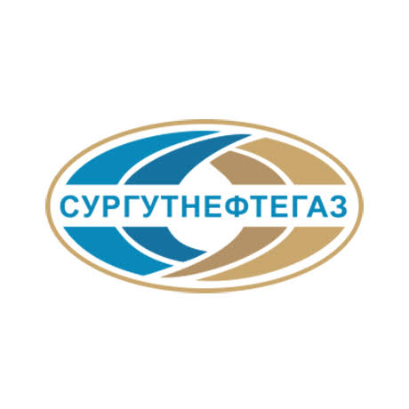
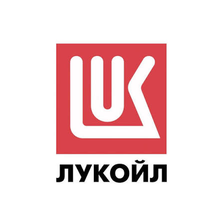

|
 |
Сургутнефтегаз |
|---|---|
| Одна из крупнейших частных вертикально интегрированных нефтяных компаний России, объединившая в своей структуре научно-проектные, геологоразведочные, буровые, добывающие подразделения, нефте- и газоперерабатывающие, сбытовые предприятия. «Сургутнефтегаз» осуществляет деятельность в трех нефтегазоносных провинциях России — Западно-Сибирской, Восточно-Сибирской и Тимано-Печорской. С 1984 года компанией бессменно руководит Владимир Богданов: в 1984–1993 годах он был генеральным директором ПО «Сургутнефтегаз», с 1993 года — генеральный директор ОАО, а затем ПАО «Сургутнефтегаз». Бенефициары компании рынку неизвестны, ее представители заявляют, что «акции распределены между акционерами, ни один из которых не является конечной контролирующей стороной и не оказывает существенного влияния». | |
|
 |
Лукойл |
| «Лукойл» — одна из крупнейших публичных вертикально интегрированных нефтегазовых компаний в мире, на долю которой приходится около 2% мировой добычи нефти и около 1% доказанных запасов углеводородов. Компания занимается разведкой и добычей в 14 странах: основные работы ведутся в России, Центральной Азии и на Ближнем Востоке. Доказанные углеводородные запасы у «Лукойла» составляют более 15 млрд баррелей, из них 76% жидких углеводородов и 24% — газ. На конец 2024 года у «Лукойла» было более 5 тысяч АЗС в 19 странах мира. | |
| ВТБ | |
| Банк ВТБ, ранее известный как Внешторгбанк, был учрежден в 1990 году в качестве российского банка для внешней торговли. В 1998 году банк преобразовали в акционерное общество, а в 2006-2007 года прошел ребрэндинг банка. В результате SPO банка в сентябре 2025 года доля государства в ВТБ снизилась до 50% плюс одной акции. А в феврале 2026-го стало известно, что крупным миноритарием ВТБ оказался экс-гендиректор «Связьинвеста» Евгений Юрченко (к началу марта он довел долю до 8%). С начала 2022 года ВТБ находится под блокирующими санкциями Минфина США. По итогам 2025 года ВТБ заработал 502 млрд рублей, на 9% рекордных для банка показателей 2024-го. ВТБ — один из крупнейших розничных банков России, а в своей стратегии до 2026 года банк запланировал масштабное развитие розничной сети, увеличение объемов расчетов в национальных валютах «дружественных» стран, развитие собственной технологической платформы. |